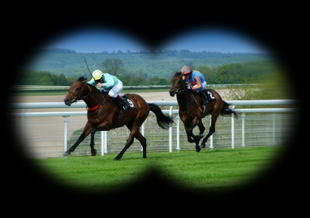
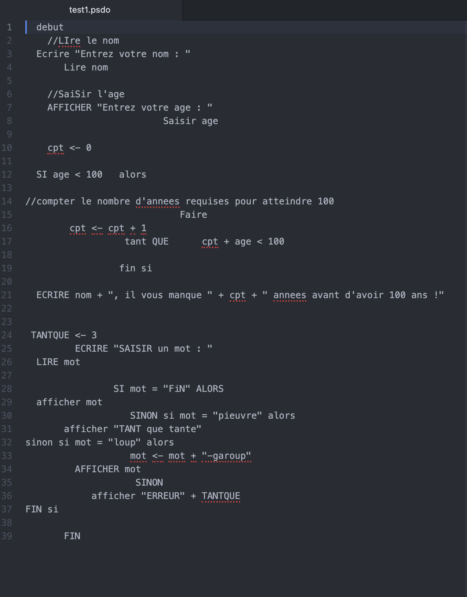
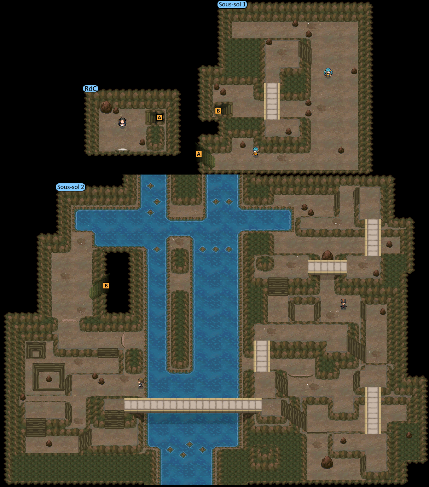
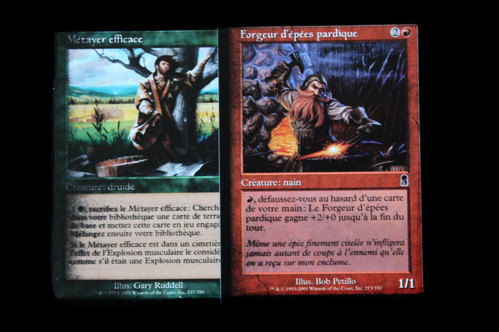
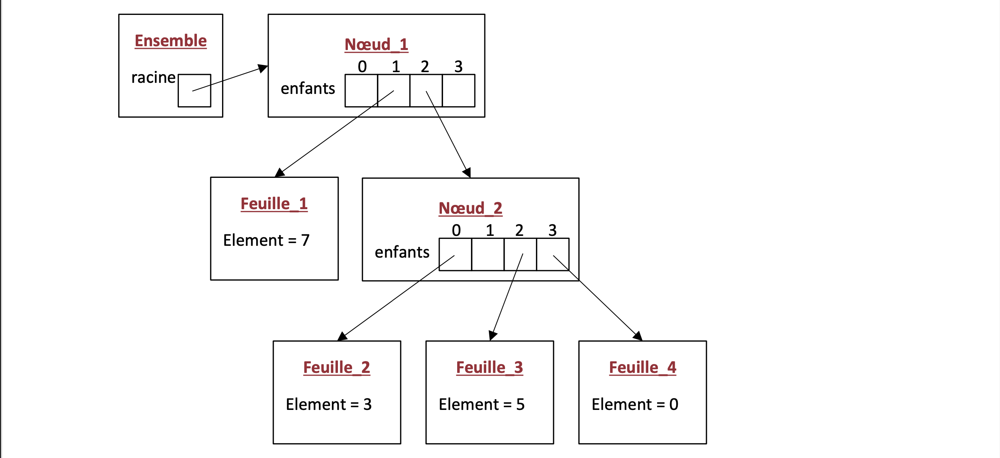
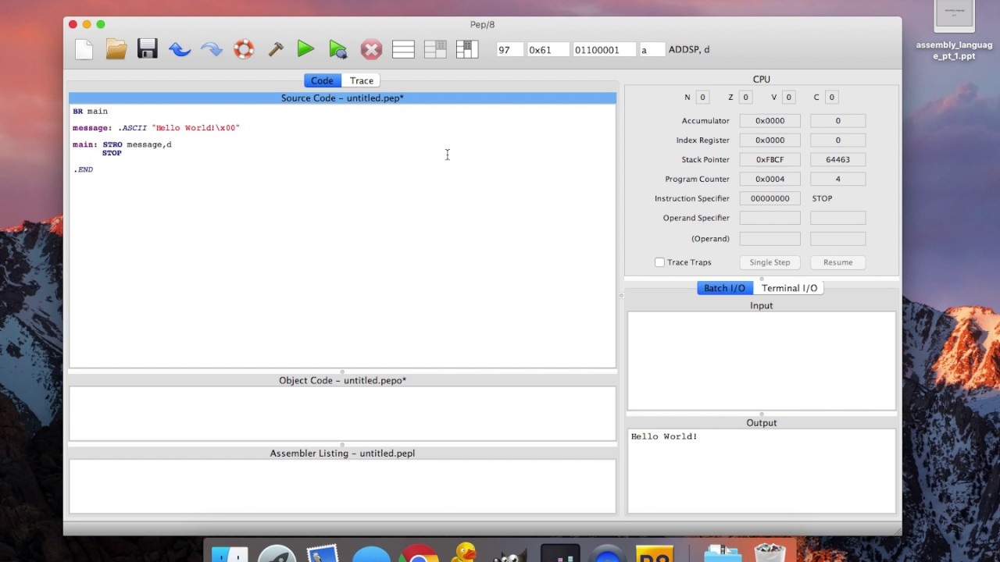

Mes Projets Personnels/My Personal Projects
FindSongs
J'ai conçu et développé une extension pour Chrome qui trouve des chansons similaires à la chanson jouée sur YouTube.
Site Web pour Agence Web
J'ai conçu et développé un site web pour une agence numérique basée à Montréal, afin de créer une plateforme intuitive et réactive, tout en respectant les besoins spécifiques du client en termes d'UX/UI et de performance.
Mes Projets Universitaires/My University Projects



Paris Hippiques
J'ai conçu et développé un système de paris hippiques innovant dans le cadre de mon premier cours de programmation (INF1120).
Adoption d'animaux Web App
J'ai conçu et développé une application web permettant d'adopter ou de mettre en adoption des animaux dans le cadre de mon cours 'Introduction à la programmation Web'.

Indentation Pseudocode
J'ai conçu et développé un programme qui permet de corriger l’indentation d’un algorithme écrit en pseudocode se trouvant dans un fichier texte. De plus, le programme permet de formater, soit en majuscules, soit en minuscules, tous les mots réservés du langage pseudocode.
Carnet de Contacts
J'ai conçu et développé une classe nommée Contact servant à modéliser un contact personnel. Cette classe pourrait éventuellement servir dans une application de gestion d'un carnet de contacts personnels où l'on pourrait ajouter/supprimer/modifier des contacts, etc.

Carte d’un antre sousterrain
J'ai conçu et développé un programme généreant la carte d’un antre sousterrain. Ce programme lit l’information dans un fichier décrivant la taille des pièces à placer dans le sousterrain et ensuite place ces pièces aléatoirement. Le résultat est affiché à l’écran, à l’aide de caractères.

Jeu de cartes à collectionner (CCG)
J'ai conçu et développé un logiciel qui interprète les résultats d’un jeu en analysant la suite d’événements du jeu. Le logiciel lit une suite d’événements dans un fichier qui décrit une partie d’un jeu de cartes de type CCG.

Type de données abstraites, ensemble
J'ai conçu et développé un type de données qui représente un ensemble d’entier (int). • Contenant homogène à taille variable.
o Permet l’insertion et la suppression d’élément.
• Chaque élément est unique.
o Il n’y a pas de doublons.
• Peut être consulté.
o Taille.
o Appartenance.
Assurances de soins de santé
J'ai conçu et développé un logiciel qui calcul des remboursements de réclamations d'assurances de soins de santé.

Pep/8 Assembly
J'ai conçu et développé différents programmes en langage assembleur. Conversion de Base: Conception d'un programme qui fait la conversion d'un nombre entier décimal positif en sa représentation dans une base X. La base spécifiée X peut être entre 2 et 36. Le programme retourne un texte correspondant à la représentation de ce nombre en base spécifiée.
Carré Magique: Conception d'un programme qui
a) Lit un nombre n : taille de matrice n x n. Valide n : une valeur positive de 2 à 10.
b) Saisit les valeurs de 1 à n dans un ordre quelconque. L’ordre d’entrée des valeurs définie le positionnement des valeurs dans le carré.
c) Vérifie si le carré avec les valeurs saisies représente le carré magique